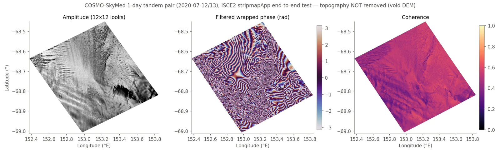
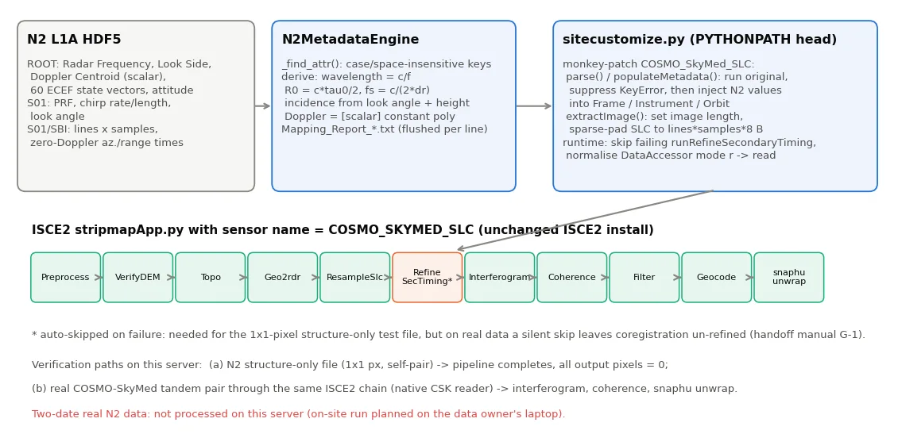
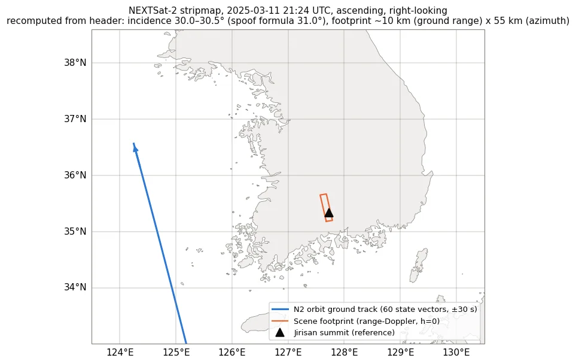
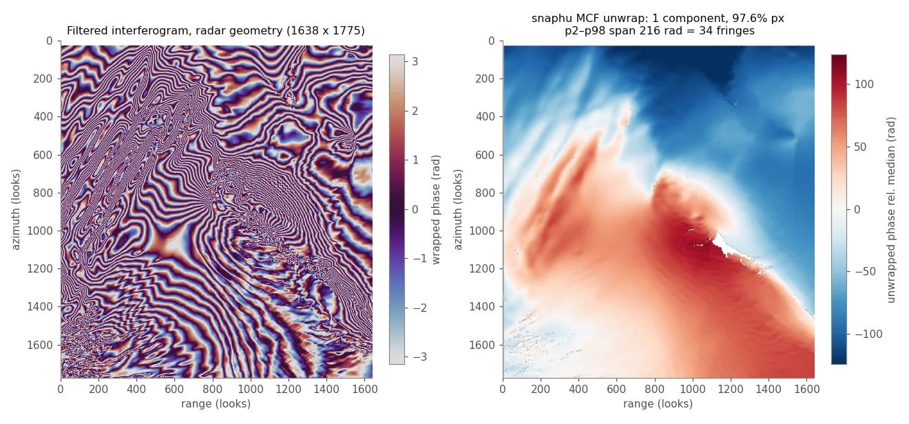
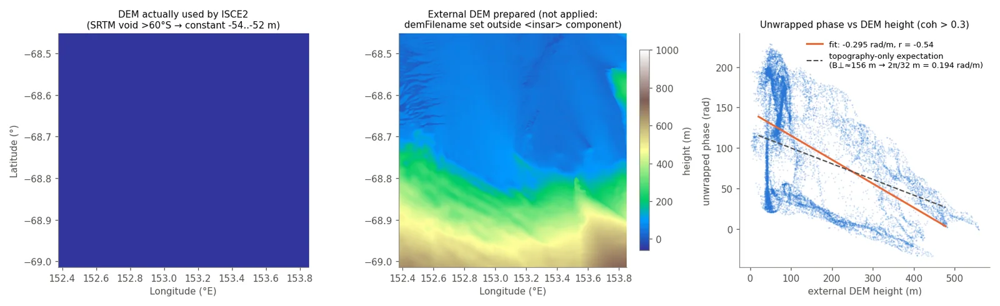
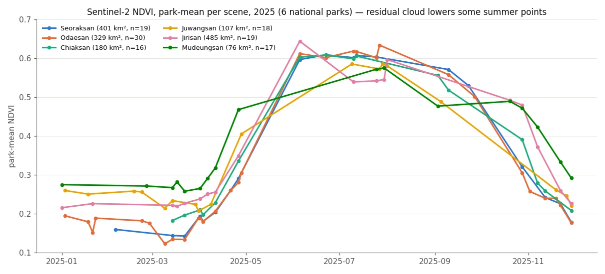
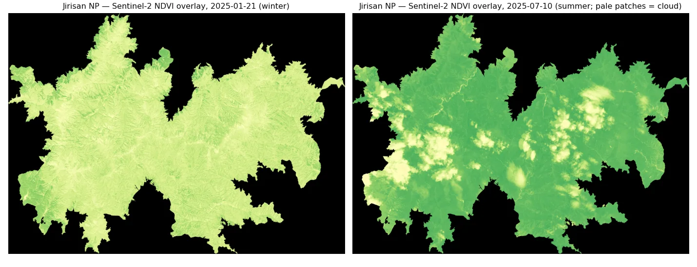

국산 SAR(NEXTSat-2) InSAR 처리 파이프라인 — 국립공원 지표변위 모니터링NEXTSat-2 SAR InSAR pipeline for national-park ground-motion monitoring
ISCE2에 리더가 없는 국산 소형 SAR 위성 NEXTSat-2(N2) 영상을, ISCE2를 고치지 않고 COSMO-SkyMed 리더를 런타임 패치(spoofing)해 InSAR 처리하는 파이프라인을 만들었다. 실제 CSK 1일 쌍으로 처리 체인을, N2 구조 시험파일로 메타데이터 주입을 검증하고 고객 측 노트북용 현장 번들로 이관했다. 재검토에서 CSK 검증 결과가 빈 DEM 때문에 지형 위상을 제거하지 못했다는 점을 찾아 기록했다.Built a pipeline that runs InSAR on NEXTSat-2 (N2), a Korean small SAR satellite that ISCE2 cannot read, by patching the COSMO-SkyMed reader at runtime instead of modifying ISCE2. The processing chain was tested on a real one-day CSK pair and the metadata injection on an N2 structure-only file, then packaged for on-site processing on the client's laptop. A later review found that the CSK test used a void DEM, so topographic phase was never removed.
배경 · 목표Background
- 국립공원 관리기관이 국산 위성 N2의 X밴드(λ 3.1 cm) 스트립맵 SLC로 산악 지표변위(산사태·사면 이동)를 볼 수 있는지 시험하려 함
- ISCE2·SNAP 등 공개 InSAR 도구에 N2 센서 리더가 없음 — N2 L1A HDF5 구조는 CSK와 비슷하지만 키 이름·도플러 표현·화소 형식이 다름
- 고객 측 데이터 반출 제약: 원본 N2 HDF5는 고객 노트북 밖으로 반출 불가 → 현장(Windows+WSL)에서 처리할 수 있는 이식형 번들 필요
- A national-park management agency wanted to test whether X-band (λ 3.1 cm) stripmap SLCs from the Korean satellite N2 can reveal ground motion (landslides, slope creep) in mountain parks
- Open InSAR tools (ISCE2, SNAP) have no N2 reader; the N2 L1A HDF5 resembles COSMO-SkyMed but differs in key names, Doppler representation and sample format
- Raw N2 HDF5 could not leave the client's laptop, so the pipeline had to be portable and run on-site (Windows + WSL)
방법Method
- ISCE2 센서 신규 등록·CSK 헤더를 N2 형식으로 재작성하는 방식은 23회 시도 모두 실패(PortError, 속성 불일치) → ISCE2 수정 없는 런타임 패치로 전환
- sitecustomize.py를 PYTHONPATH 맨 앞에 두어 COSMO_SkyMed_SLC의 parse/populateMetadata/extractImage를 monkey-patch, N2 헤더 키를 대소문자·공백 무시로 찾아 파장·시작거리(c·τ0/2)·샘플링(c/2Δr)·zero-Doppler 시각·60개 궤도벡터·PRF·처프·관측방향을 주입
- 매핑 결과를 Mapping_Report에 줄 단위로 즉시 기록(중간 실패 시에도 원인 추적 가능), runRefineSecondaryTiming 실패 skip·DataAccessor 'r'→'read' 런타임 패치
- 처리 체인(코레지→간섭도→결맞음→필터→지오코딩→snaphu MCF)은 실제 COSMO-SkyMed HIMAGE 1일 tandem 쌍(2020-07-12/13, 동남극)으로 확보
- 현장 이관: conda-pack 환경(645 MB), 경로 하드코딩 제거판 진입점, 533줄 매뉴얼(데이터 반출 원칙·sha256 무변경 증명·예상 문제 11종·LiDAR 25 cm DEM을 1 m·WGS84 타원체고로 변환하는 절차)
- 병행 과제: Sentinel-2로 6개 국립공원 2025년 공원평균 NDVI 시계열(16–30장/공원)
- Registering a new ISCE2 sensor and rewriting CSK headers into N2 form failed in all 23 attempts (PortError, attribute mismatches), so the approach switched to runtime patching with ISCE2 left untouched
- A sitecustomize.py placed first on PYTHONPATH monkey-patches COSMO_SkyMed_SLC parse/populateMetadata/extractImage; N2 header keys are matched case/space-insensitively and wavelength, starting range (c·τ0/2), sampling rate (c/2Δr), zero-Doppler times, 60 orbit state vectors, PRF, chirp and look side are injected
- Each mapped value is flushed to a Mapping_Report line by line so failures stay traceable; runtime patches skip a failing runRefineSecondaryTiming and normalise DataAccessor mode 'r'→'read'
- The processing chain (coregistration → interferogram → coherence → filter → geocode → snaphu MCF) was exercised on a real COSMO-SkyMed HIMAGE one-day tandem pair (2020-07-12/13, East Antarctica)
- On-site handover: conda-pack environment (645 MB), path-free entry script and a 533-line manual (data-export rules, sha256 proof of unmodified inputs, 11 expected failure modes, converting a 25 cm LiDAR DEM to 1 m WGS84 ellipsoidal heights)
- Side task: 2025 park-mean Sentinel-2 NDVI time series for six national parks (16–30 scenes per park)
결과Results
- N2 구조 시험파일(실제 화소 1×1, 선언 48,034×5,193): stripmapApp 전 단계 완주 310 s. 단, 출력 화소 100%가 0 — 메타데이터 주입·배관 검증일 뿐 간섭 측정값은 없음
- N2 헤더 기하 재계산: 파장 0.03107 m·시작거리 589,669 m·150 MHz·PRF 6,396 Hz 모두 주입값과 일치. 궤도+zero-Doppler 지오로케이션으로 장면 중심 35.43°N 127.68°E(지리산 권역), 입사각 30.0–30.5°(패치의 구면근사 31.0°보다 0.5–1° 큼)
- CSK 1일 쌍: 결맞음 중앙 0.50(>0.3 화소 95.5%), 내 계산 B⊥ 156 m·모호고도 32 m, snaphu 단일 연결성분 97.6% 화소, 언래핑 폭 34 fringe(0.54 m 상당)
- 실패 기록: 자동 DEM(SRTM)이 60°S 이남을 덮지 않아 DEM 전체가 void(−54 m 평면) → 지형 위상 미제거. 준비한 외부 DEM은 demFilename을 insar 컴포넌트 밖에 둬 적용 안 됨. 위상-높이 회귀 r = −0.54(기울기 −0.30 rad/m vs 지형만 기대 0.19) → 34 fringe는 변위로 해석 불가
- NDVI: 6개 공원 모두 4월 말~6월 급상승(최대 0.58–0.64), 10월 말~11월 급감. 지리산 7월 값 0.54는 6월 0.64보다 낮고 오버레이에 구름 패치 확인 — 잔여 구름 혼입
- 실제 두 날짜 N2 영상의 간섭 결과는 이 서버에 없음(현장 처리 결과 미회수)
- N2 structure-only file (1×1 stored pixel, declared 48,034×5,193): all stripmapApp steps completed in 310 s, but 100% of output pixels are zero — this verifies metadata injection and plumbing only, not an interferometric measurement
- Re-computed N2 header geometry: wavelength 0.03107 m, starting range 589,669 m, 150 MHz and PRF 6,396 Hz all match the injected values. Orbit + zero-Doppler geolocation puts the scene centre at 35.43°N 127.68°E (Jirisan area) with incidence 30.0–30.5°, 0.5–1° below the patch's spherical approximation (31.0°)
- CSK one-day pair: median coherence 0.50 (95.5% of pixels > 0.3), my estimate B⊥ 156 m and height of ambiguity 32 m, snaphu one connected component over 97.6% of pixels, unwrapped span 34 fringes (≈0.54 m LOS)
- Failure on record: SRTM has no coverage south of 60°S, so the auto DEM was entirely void (a −54 m plane) and topographic phase was never removed. The prepared external DEM was ignored because demFilename sat outside the insar component. Phase vs height regression r = −0.54 (slope −0.30 rad/m vs 0.19 expected for topography alone) — the 34 fringes cannot be read as displacement
- NDVI: all six parks rise sharply from late April to June (peak 0.58–0.64) and drop from late October. Jirisan in July (0.54) is below June (0.64) and the overlay shows cloud patches — residual cloud contaminates park means
- No interferogram from two real N2 acquisitions exists on this server (the on-site results were not brought back)







배운 점 · 한계What I learned · Limitations
- 센서 리더가 없을 때 소프트웨어를 포크하는 대신 런타임 패치로 우회하면 설치본을 건드리지 않고 이식할 수 있다. 대가는 '조용한 실패' — 실패 단계 자동 skip은 시험용으로만, 실데이터에선 로그로 refinement 수행 여부를 반드시 확인해야 한다
- 주입값 검증은 '같은 식으로 다시 계산'이 아니라 독립 기하(궤도+zero-Doppler 지오로케이션)로 해야 의미가 있다 — 이번에 입사각 근사의 0.5–1° 편차와 도플러 54 Hz 불일치(−21.5 vs 32.9 Hz, 규약 미해결)를 이렇게 찾았다
- '끝까지 돌았다'는 '맞게 돌았다'가 아니다: CSK 시험은 4.9시간 완주했지만 DEM이 void였다. 고위도 처리 전 DEM 커버리지(SRTM ±60°)를 먼저 확인하고, 지형 전용 위상이 평평하면 즉시 의심해야 한다
- ISCE2 XML은 속성 위치가 틀려도 경고 없이 무시한다(demFilename). 실행 후 isce.log의 DEM 크기로 실제 적용 여부를 확인하는 습관이 필요
- phsig.cor(중앙 0.99)는 필터 위상 분산 지표이지 결맞음이 아니다 — 결맞음은 topophase.cor 2번 밴드(중앙 0.50). snaphu에 2밴드 파일을 그대로 넘긴 문제도 남아 있다(미수정)
- 한계: 실제 N2 두 날짜 간섭 결과·X밴드 산림 결맞음 수준은 아직 확인하지 못했다. NDVI는 공원 평균 계절곡선 수준이라 산사태 탐지 근거로 쓸 수 없다
- When a sensor reader is missing, runtime patching avoids forking the toolchain and keeps the install portable. The price is silent failure: auto-skipping a failed step is fine for a test file, but on real data the log must confirm that coregistration refinement actually ran
- Injected values are only verified by independent geometry (orbit + zero-Doppler geolocation), not by recomputing the same formula — that is how the 0.5–1° incidence-angle bias and the 54 Hz Doppler mismatch (−21.5 vs 32.9 Hz, convention unresolved) surfaced
- Completing is not the same as being correct: the CSK test ran for 4.9 h with a void DEM. Check DEM coverage (SRTM ends at ±60°) before high-latitude processing, and treat a flat terrain-only phase as an immediate red flag
- ISCE2 silently ignores a misplaced XML property (demFilename); check the DEM size in isce.log to confirm what was actually used
- phsig.cor (median 0.99) is a filtered-phase variance measure, not coherence; coherence is band 2 of topophase.cor (median 0.50). Passing that 2-band file straight to snaphu is an open issue
- Limits: interferometric quality of real two-date N2 data and X-band coherence over forest are still unknown. The NDVI work is a park-mean seasonal curve and cannot support landslide detection
관련 코드Code
저장소는 센서 → 위성 → 기법 순으로 정리돼 있고, 각 폴더에 입력·출력 표가 있습니다.The repository is organised by sensor, satellite and technique; each folder documents its inputs and outputs.
산출물Deliverables
- N2→ISCE2 spoofing 코드(n2_main/n2_patch/n2_viz) + 이식판 진입점
- CSK 실데이터 처리 체인(csk_main/csk_viz)과 처리 결과 3벌
- 현장 셋업 번들(conda-pack 환경, 533줄 매뉴얼)
- 6개 국립공원 2025 NDVI 시계열·변화 GeoTIFF
- 재검증 스크립트(기하·결맞음·위상-DEM 회귀)
- N2→ISCE2 spoofing code (n2_main/n2_patch/n2_viz) and a portable entry script
- CSK real-data processing chain (csk_main/csk_viz) with three processing runs
- On-site setup bundle (conda-pack environment, 533-line manual)
- 2025 NDVI time series and change GeoTIFFs for six national parks
- Re-verification scripts (geometry, coherence, phase-vs-DEM regression)
원본 보고서와 발표자료는 사내 자료로 공개하지 않습니다. 분석 코드는 GitHub에 정리되어 있습니다.Source reports and decks are internal and not published here. Analysis code is organised on GitHub.